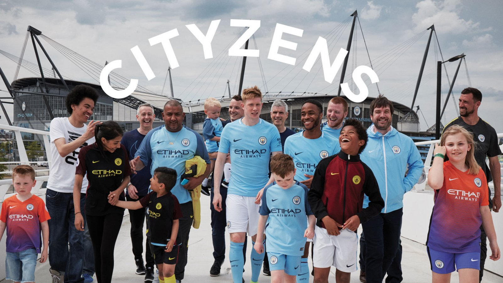
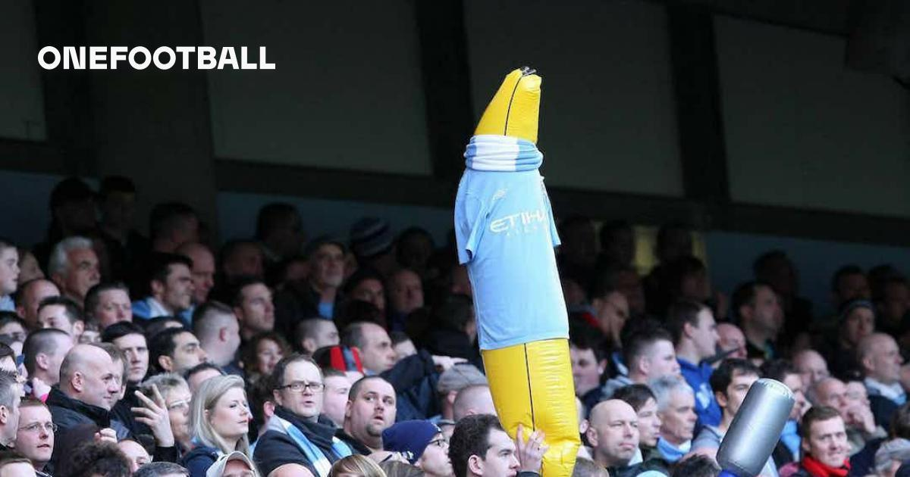

1880년 맨체스터의 고튼 서부에 위치한
세인트 마스크 교회의 교인들이 맨체스터 시티를
창단

MANCHESTERCITY
영국 잉글랜드 프리미어리그의 프로축구 클럽
연고지는 그레이터맨체스터주 맨체스터(MANCHESTER), 홈구장은
에티하드 스타디움이다.
1부 리그 통산 9회 우승을 기록한 EPL명문구단 중 하나로,
특히 잉글랜드 축구 역사상 유이한 트레블과 프리미어리그 단일
시즌 역대
최다 승점 우승 및 유일한 도메스틱 쿼드러플 등의 기록을
보유하고 있다.

TEAM 구성
주요 소개
-

01 맨체스터시티 감독
펩 과르디올라 감독
우승경력
프리미어리그 5회 우승
FA컵 2회 우승
EFL컵 4회 우승
UEFA 챔피언스리그 1회우승
-

02 공식 멤버십
시티즌(The citizens)
2014년 7월, 맨체스터시티는 새 커뮤니티 이름으로
맨체스터와 영국, 전세계 팬들을 위해 맨시티 공식 멤버쉽
회원들을 지칭하는 시티즌(The Citizens)을 런칭했습니다.
-

03 응원문화
포즈난 응원 (The Poznań)
포즈난 응원 방식은 서포터즈 모두가 그라운드를 등진채
뒤돌아서서 관중석 옆 사람과 어깨 동우를 하고 움켜진 상태로
제자리에서 점프를 하는 것을 말합니다.
승부는 이미 끝났기 때문에 더 이상 경기를 볼 필요가 없다는 의미로
지고 있는 팀에서 상당한 굴욕감을 안기는 방식으로
상대팬으로선 열받는 응원이기도 합니다.
-
04 응원문화대형 바나나 풍선
경기장에서 대형 바나나 풍선을 들고 응원하는 모습을 간혹
볼 수가 있는데 1980년대 후반부터 등장한 맨시티 팬들의 오래된
응원 문화 중에 하나로 현재까지도 30년 넘게 이어져 오고 있습니다.
선수 소개
MANCHESTER CITY PLAYERS
맨체스터 시티의 베스트 선수들과 레전드 선수들을 소개합니다.
MANCHESTER CITY BEST PLAYERS
팀연혁
1880
1892
잉글랜드 2부 축구리그가 설립되어 창단 멤버로 참가
1894
드디어 맨체스터 시티라는 이름을 사용
1926
1925~26시즌에 FA컵을 우승
1965
조머서가 감독으로 부임 후 말콤 앨리슨이 코치로
부임
2부리그에서 다시 1부리그로 승격
67-68 시즌의 팀의 2번째 리그 우승
68-69시즌에는 FA컵을 우승
69-70시즌에는 리그 컵 우승, UEFA컵 위너스컵까지
우승
1992
프리미어리그가 새롭게 개편
2002
2부 리그 우승을 차지
케빈 키건 ∙ 스튜어트 피어스 감독이 팀을 이끔
2008
아랍에미리트연합 아부다비 왕가 출신의 사업가
셰이크 만수르 빈 자이드 빈 술탄 알 나하얀 회장이
구단을 인수
만수르 회장은 맨체스터 시티에 대대적인 투자를
약속
맨체스터 시티는 호비뉴, 숀 라이트 필립스, 셰이
기븐,
크레이그 벨라미와 같은 스타들을 대거 영입
2009
08/09시즌에 팀은 10위에 안착
엄청난 자금을 동원해 에마뉘엘 아데바요르,
카를로스 테베스,
가레스 베리 등을 불러 모았고 팀의 시즌 전망은
밝았음.
하지만 시즌 성적이 나이지지 않자 2009년 12월에
마크 휴즈를 경질 후,
로베르토 만치니 감독 선임.
2012
만치니 감독은 2011/12시즌 맨체스터 유나이티드를
올드 트래포드(OT)에서6:1로 대파하는 등
선전을 이어가면서 리그 우승까지 차지,리그 44만에
1부 리그 우승
프리미어리그 단일 시즌 역대 최다 승점 100점우승
잉글랜드 축구 역사상 최초로
쿼드러플(프리미어리그, FA컵, EPL컵, FA커뮤니티
실드)을 달성
2016
15-16시즌이 끝나고 페예그리니 감독이 떠나고
16-17시즌 앞두고
바이에른 뮌헨 감독직을 맡았던 펩 과르디올라 감독
부임
팀의 개편을 위해 마르틴 데미첼리스, 사미르
나스리,
윌프레드 보니, 조 하트 등 기존선수들을 임대 이적
그리고 이적시장에서 도르트문트 소속 미드필더
일카이 귄도간,
에버튼 소속 수비수 존 스톤스, 바르셀로나 소속
골키퍼 클라우디오 브라보,
FC살케 유망주 르로이사네를 영입하면서 전력보강을
성공
2023
펩 과르디올라 감독 이후
22-23시즌에 맨체스터 시티가 구단 역사상 처음으로
UEFA챔피언스리그우승과 함께 이미 달성한 적이
있는
리그우승 및 주관 컵 대회 우승으로 구단 역사상
트레블을 달성.